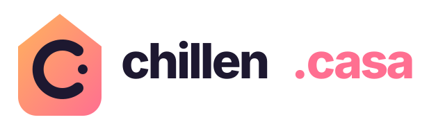

Correo personal
Tu nombre, una dirección limpia y una bandeja protegida para usarla de verdad.
Primera utilidad
Un espacio para nuestra gente
Correo personal y pequeños servicios privados para amigos. Sin ruido, sin postureo y con nombres que sí se recuerdan.
Empezamos por el correo. El resto llegará solo si de verdad nos hace la vida más fácil.
Tu nombre, una dirección limpia y una bandeja protegida para usarla de verdad.
Primera utilidadEnviar fotos y archivos grandes entre amigos mediante enlaces privados y temporales.
En preparaciónUn calendario común para cenas, viajes, cumpleaños y esos planes que nunca caben en el chat.
En preparaciónFotos de viajes y encuentros en un espacio nuestro, ordenadas y sin compresión innecesaria.
En preparaciónAccesos rápidos a recursos, recomendaciones y servicios que compartimos.
En preparaciónUna sola puerta para entrar en los servicios de la casa sin convertirlo en otra red social.
Más adelantechillen.casa no quiere competir con tus aplicaciones. Quiere ser la dirección común que las conecta: sencilla para quien la usa, cuidada por alguien de confianza y reservada para el círculo cercano.
Escríbenos con dos o tres opciones. Las direcciones se asignan personalmente para evitar duplicados y mantener la casa ordenada.
Solicitar dirección